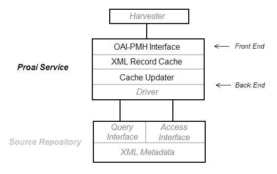

Proai is a repository-neutral, Java web application supporting the Open Archives Initiative Protocol for Metadata Harvesting (OAI-PMH) version 2.0. By implementing a repository-specific driver, developers can provide a full-featured OAI-PMH access point to their existing software.
Proai offers the following features:
Before attempting to use Proai for your own OAI-PMH needs, you should have a basic understanding of how it works.
Proai is installed as a service that sits between a source repository and OAI harvesters. On the front end, it responds to OAI requests by consulting its local XML Record Cache. On the back end, it keeps this cache up-to-date by periodically communicating with the source repository through a repository-specific interface.

When a harvester sends an OAI request, Proai interprets the request and consults the record cache, which consists of database tables and XML record files on disk.
If a response exceeds a configured number of records, Proai
takes care of splitting it into multiple parts and generating a
resumptionToken for each part. In OAI-PMH,
this is known as
Flow Control.
The front end depends solely on the record cache. It does not directly access the source repository and therefore can do its job even when the source repository is unavailable.
The job of Proai's back-end is to keep the record cache up to date. This is done through a process known as the update cycle.
During an update cycle, the cache updater communicates with the source repository via the OAIDriver interface. An update cycle progresses as follows:
proai.properties file accordingly.
log4j.xml
file and make sure it's in your CLASSPATH.
For some help with Log4J configuration, see the
Log4J
XML Configuration Primer.
Using Proai for your own repository software is a matter of creating
an
OAIDriver
implementation. See the included source code of
OAIDriverImpl
for an example.
Proai is distributed under the Educational Community License (ECL), v1.0.
The distribution also includes several third-party, open-source libraries, each with it's own license terms.
See the License Information Page for specific terms of all relevant licenses.